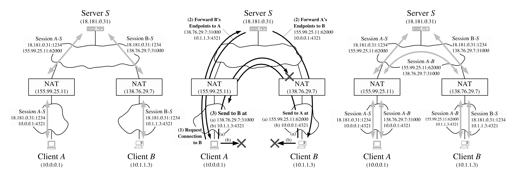

webrtc基础服务
NAT
NAT(Network Address Translation)是网络地址转换，通过将内部网络（私有网络）中的IP地址映射为公共网络（互联网）上的IP地址，实现内部网络中的终端设备能够使用共享的公共IP地址来访问外部网络。NAT的运作需要通过NAT网关来完成内部和外部网络之间的通信。NAT后的是内网IP，分配给NAT的是公网IP，在NAT过程中，内部IP地址被映射到公共IP地址上。最初，NAT的主要目的是解决IPv4地址短缺的问题，并且它也有隐藏内部网络设备的功能。
典型的NAT类型可分为完全圆锥型、受限圆锥型、端口受限圆锥型和对称型四种，也称为NAT 1-4。内部主机地址 iAddr:iPort 映射的外部地址 eAddr:ePort，外部主机地址 nAddr:nPort。
完全圆锥型：所有经过NAT处理后的内部IP地址都能够与外部主机进行双向通信
受限圆锥型：所有经过NAT处理后的内部IP地址能够主动与外部主机通信，但外部主机只有在接收到某个内部设备的数据后，才能通过NAT与该内部设备进行通信。这种类型限制外部主机发出的数据包必须是之前接收过内部网络数据的IP地址，但内部设备的端口没有限制。
端口受限圆锥型：所有经过NAT处理后的内部IP地址能够主动与外部主机通信，但外部主机只有在接收到某个内部设备特定端口的数据后，才能通过NAT与该内部设备进行通信。这种类型限制外部主机能够与内部网络通信的条件是接收过该内部设备特定IP和端口的数据。
对称型：内部设备通过NAT与外部设备建立联系时，NAT会建立对应的映射关系。当内部设备需要和另一台外部设备通信时，NAT会创建不同的映射关系。此外，只有曾经接收过内部主机数据的外部主机才能将数据包返回。
P2P打洞

假设存在两台设备 A 10.0.0.1 和 B 10.1.1.3，分别位于各自的 NAT_A 155.99.25.11 和 NAT_B 138.76.29.7 之后，不能直接进行通信，需要一台公网上的服务器 S 18.181.0.31 做地址转发。打洞流程如下：
- A 与 S 建立连接（Session A-S），向 S 注册自己的内网地址 10.0.0.1:4321；S 会同时记录 A 在公网的地址 155.99.25.11:62000。B 与 S 建立连接（Session B-S），向 S 注册自己的内网地址 10.1.1.3:4321；S 会同时记录 B 在公网的地址 138.76.29.7:31000。
- A 向 S 发送请求，获取 B 的地址（Request Connection to B）；S 会同时把 A 的地址转发给 B(Forward A’s Endpoints to B)。然后 A 和 B 都开始尝试相互向对方发送数据包。
- 当 A 向 B 第一次发送数据包时（Send to B at）会在 NAT_A 中产生映射 (10.0.0.1:4321, 138.76.29.7:31000)；此时 NAT_B 并没有 A 和 B 的映射记录，数据包仍然会被丢弃。
- 当 B 向 A 第一次发送数据包时（Send to A at）会在 NAT_B 中产生映射 (10.1.1.3:4321, 155.99.25.11:62000)；因为之前 NAT_A 已经创建了 A 和 B 的映射，所以 B 请求成功。
- 当 A 向 B 第二次发送数据包时，因为 NAT_B 也有了 A 和 B 的映射记录，所以 A 也请求成功。于是打洞完成，A 和 B 可以直接建立点对点连接（Session A-B）。
ICE
ICE(Interactive Connectivity Establishment)是给处于 NAT 和防火墙之后的客户端之间建立对等连接的协议，有STUN(Session Traversal Utilities for NAT)和TURN(Traversal Using Relays around NAT)两种。
圆锥形通常情况下只需要一个NAT网关，内部设备可以直接与外部设备进行通信，没有额外的复杂性。而对于对称型NAT，每个不同的通信对都需要不同的映射，而端口和地址的数量是有限的，随着映射被用尽，新的连接将无法建立。通常的做法是用一个公网服务器做流量中继，内网设备经过NAT发出的流量始终先发送给中级服务器，然后中继服务器再转发给外部设备。这样可以绕过对称NAT的限制，但也增加了网络架构的复杂性和通信的延迟。
当通过信令服务器交换完SDP和候选信息后，ICE框架会在两端之间建立一个通道。不同的NAT类型需要ICE选择不同的打洞方式。
- TCP 直接连接时，通过 HTTP 端口或 HTTPS 端口。
- UDP 直连时，使用 STUN（Session Traversal Utilities for NAT）服务器做地址转发
- 间接连接均使用 TURN（Traversal Using Relays around NAT）服务器做流量中继
简单理解，STUN用来获取外网地址，TURN用来进行流量的中继转发
实时通信指标
音视频服务质量与带宽大小、网络质量、实时性之间存在矛盾，主要的解决办法是增加带宽、减少数据量、适当增加时延、提高网络质量、快速准确地评估带宽。
适当增加时延
数据传输时出现的时快时慢现象称为网络抖动。网络抖动会造成视频出现频繁卡顿和快播现象，音频出现断音、吞音等问题。可以增加时延，先将数据放到缓冲队列，然后再从缓冲队列中获取数据进行处理，对数据进行平滑。音视频的采集、编解码、渲染等时间是固定的，所以只要将网络时延计算出来，就可以确定缓冲区的时延了。
提高网络质量
提高网络质量的前提是网络没有发生拥塞。对网络质量产生影响的问题主要包括丢包、延迟、抖动。
丢包是网络传输过程中网络质量好坏的最重要标志，对网络的影响最大。优质的网络丢包率不超过2％。对于WebRTC而言，大于2％且小于10％的丢包率是正常的网络。
延迟与丢包相比，对网络的影响要少一些。两端之间数据传输的延迟持续增大，说明网络很可能发生了拥塞。
抖动对网络质量的影响最小。较小的抖动可以通过循环队列消除，过大的抖动则将乱序包当作丢包处理。在WebRTC中，抖动时长不能超过10ms，也就是说，如果有包乱序了，最多等待该乱序包10ms，超过10ms就认为该包丢了。
上述问题的解决方法主要包括：NACK/RTX、FEC前向纠错、JitterBufer防抖动、NetEQ、拥塞控制。
快速准确地评估带宽
为了防止发生网络拥塞，直播客户端要有快速、准确地评估带宽的方法。四种常见的带宽评估方法，分别是：Goog-REMB、Goog-TCC、NADA、SCReAM。
目前总结出WebRTC用于提升QoS的方法有：NACK、FEC、SVC、JitterBuffer、IDR Request、Pacer、Sender Side BWE、Probe、VFR（动态帧率调整策略）、AVSync（音视频同步）、动态分辨率调整。
拥塞控制
网络拥塞是基于IP协议的数据报交换网络中常见的一种网络传输问题，它对网络传输的质量有严重的影响，网络拥塞是导致网络吞吐降低，网络丢包等的主要原因之一，这些问题使得上层应用无法有效的利用网络带宽获得高质量的网络传输效果。网络拥塞导致的丢包，延迟，抖动等问题。
参考
WebRTC音视频实时互动技术
WebRTC 学习指南
Peer-to-Peer Communication Across Network Address Translators